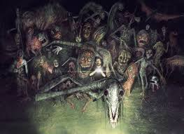

Trevor Henderson is an illustrator and writer based in Toronto, Canada. He graduated from the Ontario College of Art and Design in 2010, and has been making ghosts and monsters ever since. He loves to create horrific online urban legends, ghost photos, and depictions of horrific cryptids for various clients.
He has been commissioned to create art for novels, video games, movie posters and more. He hopes his art and writing can scare a lot of children someday.